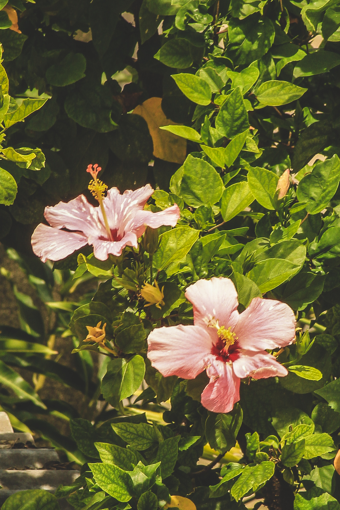
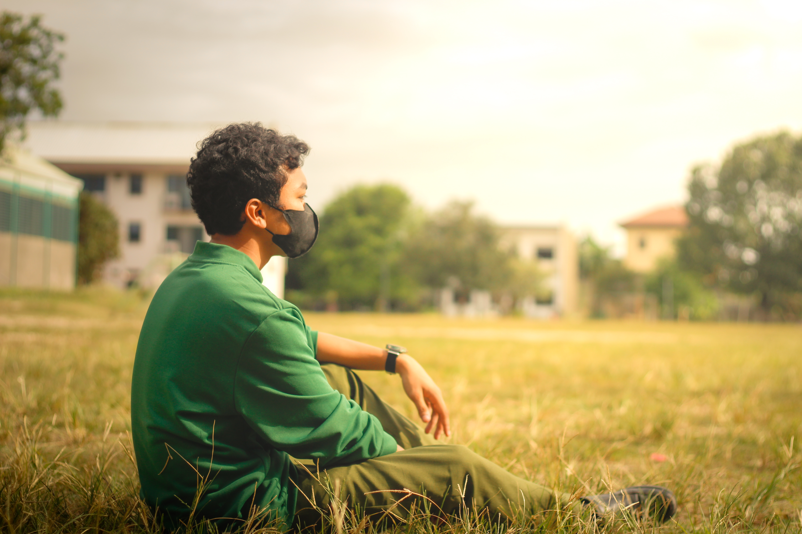
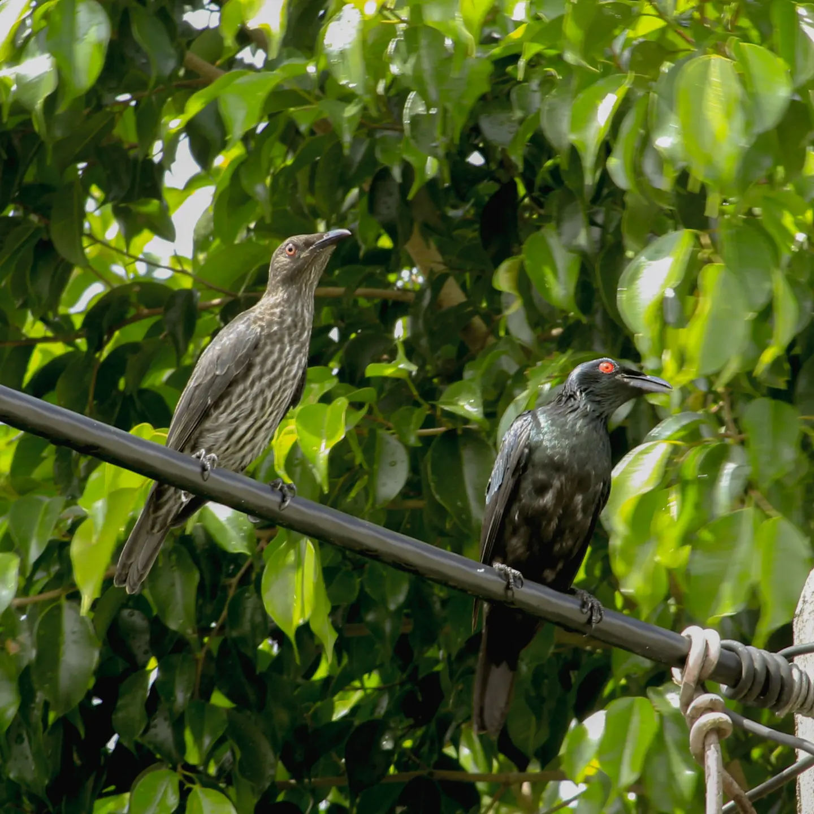

Street Photography
Street photography is a genre that captures candid moments in public places, focusing on the everyday life, emotions, and stories of people and environments.
It highlights spontaneous interactions, real expressions, and the raw energy of urban settings without staging or directing subjects

Nature Photography
Showcasing the beauty of landscapes, plants, and the natural world.
This genre focuses on peaceful scenes and breathtaking environments.

Portraits
Highlighting the personality and emotions of a person through expressive imagery.
Portraits reveal character, mood, and human depth.

Animal Photography
Capturing animals in their natural behavior and environment.
This genre celebrates wildlife and the diversity of living creatures.